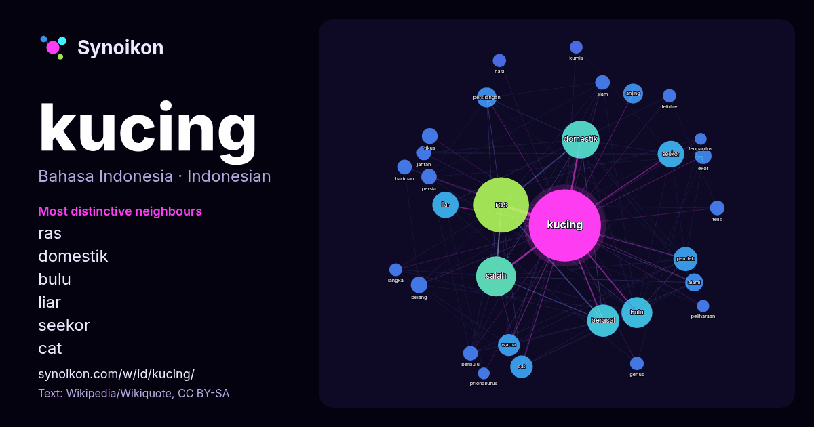

Bahasa Indonesia · kata populer
kucing
“cat” · Kata-kata di sekitarnya dalam 1314 kemunculan dari Wikipedia, Wikiquote.

Tetangga paling khas
- ras 158×
- domestik 86×
- bulu 54×
- liar 42×
- seekor 41×
- cat 37×
- persilangan 31×
- pendek 24×
- belang 23×
- anjing 22×
- berasal 22×
- tikus 18×
- felis 18×
- berbulu 17×
- siam 17×
- alami 17×
- harimau 16×
- felidae 16×
- salah 16×
- persia 16×
× = berapa kali lebih sering daripada di teks Wikipedia umum.
Tetangga paling sering
- ras 258
- salah 134
- domestik 120
- berasal 88
- bulu 80
- memiliki 74
- bahasa 64
- seekor 59
- liar 58
- pendek 49
- amerika 47
- cat 43
- warna 40
- jenis 39
- anjing 33
- persilangan 33
- spesies 33
- dikenal 32
- indonesia 29
- alami 27
Dalam konteks
- Kucing, disebut juga sebagai kucing domestik atau kucing rumah (nama ilmiah: Felis silvestris catus atau Felis catus), adalah sejenis mamalia karnivora Wikipedia snippets · Kucing
- adalah sebuah spesies kucing liar kecil dalam genus Leopardus yang berasal dari Bolivia. Teridentifikasi melalui studi genetika kucing macan yang diterbitkan Wikipedia snippets · Tilcayo
- Kucing Persia, juga dikenal sebagai Kucing Persia Berbulu Panjang atau hanya Persia, adalah ras kucing tradisional berbulu panjang yang dicirikan oleh Wikipedia snippets · Kucing persia
- Kucing belang tiga, atau disebut juga kucing telon atau kucing belacu (bahasa Inggris: calico cat), adalah kucing domestik yang memiliki warna putih dengan Wikipedia snippets · Kucing belang tiga
- … hitam-putih"; Hanzi sederhana: 大熊猫; Hanzi tradisional: 大熊貓; Pinyin: dà xióng māo; Jyutping: daai6 hung4 maau1, berarti "kucing beruang Wikipedia snippets · Panda raksasa
- Orthosiphon aristatus atau dikenal dengan nama kumis kucing termasuk tanaman dari famili Lamiaceae/Labiatae. Tanaman ini merupakan salah satu tanaman obat Wikipedia snippets · Kumis kucing
- sehari-hari sering disebut kucing, dan merupakan sebuah klad. Anggota keluarga ini juga disebut felid (/ˈfiːlɪd/). Istilah "kucing" mengacu pada anggota felidae Wikipedia snippets · Felidae
- Turki: Ankara kedisi, 'kucing ankara') adalah salah satu ras kucing domestik alami tertua. Ras ini berasal dari Ankara, Turki. Kucing ini hanya bisa dikembangbiakkan Wikipedia snippets · Anggora turki
Kata lainnya
- air
- anjing
- bahasa
- emas
- iklim
- jantung
- jembatan
- kebenaran
- kehidupan
- kekuasaan
- keluarga
- kematian
- kereta
- kerja
- kesehatan
- kesenian
- lingkungan
- makanan
- sains
- sejarah
- tuhan
- uang
Dihitung sebelumnya pada 2026-10-09 dengan pengaturan bawaan (±5 kata, korpus sedang). Peta interaktif dapat memperbaruinya dengan data langsung.
Antarmuka diterjemahkan mesin; koreksi dipersilakan.